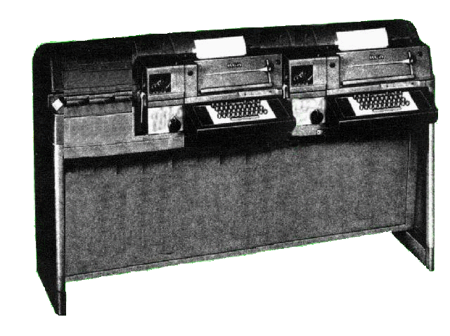

The Model 28 Extended ASR (XASR)
The Model 28 XASR never existed. George made it up. That was the point.

The Model 28 XASR (Stretch ASR) is a dual typing-unit developed specially for the government to satisfy a need for a single operator position requiring dual keyboards and typing units. This was considered to be the Cadillac Limousine of all teletype units in Washington DC during the cold war. The Model 28 Stretch contains dual tape punches and a single underdome reperf unit independently selectable from each current loop, thus giving it the flexibility to support communication operations while saving on valuable floor space.
Some interesting details about the XASR machines obtained via the Freedom of Information Act.
There were only 347 units of the dual 28ASR ever built. The system for which the machines were built remains a mystery to this day, as all documentation regarding or referring to the system was purged from the classified federal archives some time between 1997 and 1999. The engineer of the project, a Mr. Lyman F. Curtiss, apparently perished on a flight between San Juan, Puerto Rico and Charleston late in 2000. No trace of the aircraft was ever found. They were manufactured by Teletype under a top-secret White House purchase order authorized by Lyndon Johnson, issued only two weeks after he assumed the presidency.
The machines were kept in a warehouse located in an air-conditioned facility 400 feet directly below the Senate office building. Access was through a tunnel whose entrance was only accessible from a special elevator located on the third floor of the Senate office building, and the door to the lift was perpetually marked “Out of Order.” The door could only be opened by a dual key system whose keylocks were on either side of the door. The Secretary of Defense held one key, and the White House Communications Officer held the other. When the keys were actuated the president, who held a third key which he carried on a lanyard around his neck, would then complete the access sequence.
The red “HOLD” button on the president’s oval office telephone was equipped with a light which blinked for ten seconds after the two keys held by the staffers were actuated. The president then had only twenty seconds to insert his third key into a concealed lock located underneath the lightswitch to the oval office. Depressing the bottom of the switch plate unlatched the door which flipped up revealing the lock cylinder. The three keys having been actuated completed an interlock chain to the control system for the elevator, which caused it to rise from the bottom of the shaft to the third floor door and then opened. SecDef and the Communications Officer then had to place their thumbs on a fingerprint reader. When the system was satisfied of proper identity the elevator would descend to the aforementioned storage facility.
The facility was guarded by Marine Recon personnel in battle dress uniform, armed with MP-5 sub-machine guns. The elevator’s occupants were frisked upon arrival and then required to change into clothing similar to medical scrubs, and required to wear surgical gloves. The assigned tasks were then completed by SecDef and the Comm Officer, with part of the sentry staff filming them continuously. Return to the unsecure third floor of the Senate Office building was a reverse of the procedure for entry, with the exception that the elevator system required retinal identification prior to returning the occupants to the point of ingress.
The arrest of FBI Agent and spy Robert Hanssen in 2001 and subsequent debriefing revealed that the existence of the entire complex was compromised early in 1987. The Russians immediately commenced a retaliatory effort by ordering a top-secret division of the GRU to a location deep in the Ural Mountains, where an engineering facility costing upwards of fifty billion rubles was built.
The facility ultimately produced a Russian equivalent of the Extended 28ASR, designated the Karansikov WW-73. The Karansikov unit was decidedly inferior to the XASR in that it would accept no more than 1 percent end distortion without garbling. No known photographs of the Karansikov machines were ever taken, and the facility was destroyed with all contents in 2003 by Serbian commando teams equipped with tons of thermite devices, which literally melted everything save for the concrete tunnels. The US storage area was decommissioned by filling it with approximately 35,000 yards of concrete. Sadly, ALL of the machines were still in top operational condition. Robert Hanssen is now serving a life term in solitary confinement in a maximum security federal facility in Colorado.
Little-known facts about a rare machine!!!
There were very few of these units produced, so if anyone has any data or schematic on this unit, please e-mail the web masters of this site with this information.